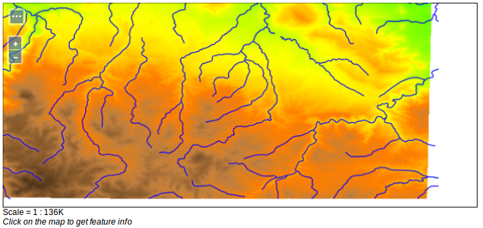

Gruppenlayer
Gruppenlayer sind eine Sammlung von bereits im GeoServer veröffentlichten Layern, die gemeinsam über nur einen Layer angefordert werden (siehe Kapitel 3.2).
Aufgabe:
Erstellen Sie einen neuen Gruppenlayer mit verschiedenen Einzellayern ihrer Wahl.
Bearbeiten Sie die Layer-Hierarchie so, dass flächenhafte Layer im Hintergrund liegen (z.B. administrative Daten oder Satellitendaten) und kleinere Einheiten (Straßen, Orte oder Flüsse) im Vordergrund.
Veröffentlichen Sie den Gruppenlayer.
